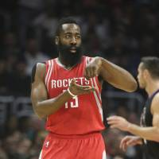
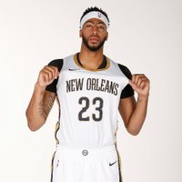
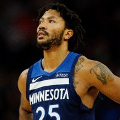
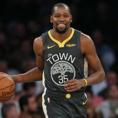

Curry was Davidson College's all-time leading scorer in history with 2,635 points. He also achieved records in single season points, steals and in freshman points Stephen Curry is a 3 time NBA champion, for the years 2015, 2017, and 2018.Stephen Curry is a 3 time NBA champion, for the years 2015, 2017, and 2018.In 2015 and 2016 Stephen Curry was voted NBAs Most Valuable Player.
Giannis Antetokounmpo
In 2013, the Milwaukee Bucks drafted Giannis with the 15th pick of the 1st round. The year prior, he spent a season playing second-tier professional ball in Greece for Filathlitikos, in the Greek League. During his one year with the team, he put up solid numbers for an 18-year-old, posting 9.5 PPG on 46.4% shooting, along with 5.0 RPG. Still very young and with a lot of raw talent, the Bucks saw his potential and took a chance on him.In his rookie campaign with the Bucks, he appeared in 77 games, averaging 6.8 points and 4.4 rebounds per game. Still very young, Milwaukee took things slow with his development, not rushing him into the fray and forcing him to carry the team. After two more promising seasons, the Bucks saw that he was ready to take over and gave him a four-year, $100 million contract extension.
Lebron James
LeBron was drafted by the Cleveland Cavaliers where he played his first seven seasons. Since he grew up just down the road at Akron, Ohio he was considered a home town superstar and maybe the biggest star ever in Cleveland. However, despite LeBron's excellence on the court, the team was unable to win a championship. In 2010, LeBron became a free agent. This meant he could go play for any team he wanted. Which team he would choose was big news. ESPN even had a whole show called "The Decision" where LeBron told the world that he was going to play for the Miami Heat next. During his four years with the Miami Heat, LeBron led the Heat to the NBA championship finals every year, winning the championship twice.

James Harden
On January 30, 2018, he became the first player in NBA history to score 60 points while recording a triple-double at least 10 points, rebounds and assists. Additionally. During the 2016-17 season, he became the first NBA player to record two 50-point triple-double gamesHarden finished 2016-17 as the first player to Get at least 2,000 points (2,356), 900 assists (907) and 600 rebounds (659) in one season, also finishing the year with a record 474 turnovers

Anthony Davis
NBA power forward/center who was drafted first overall in 2012 by the New Orleans Hornets, who were renamed the Pelicans in 2013. He was selected to his first NBA All-Star game in 2014 and led the NBA in blocked shots in both 2014 and 2015. He spent one year at the University of Kentucky, earning the 2012 National Player of the Year award while leading his team to a 38-2 record and an NCAA Championship.
Russell Westbrook
Drafted by Oklahoma, Russell Westbrook showed the first glimpse of his talent in 2009, when he scored his very first triple double and eventually ended up in that season’s NBA All Rookie First Team, and was placed at number four in the line-up. In Oklahoma’s second season, his team, got eliminated in the first round itself by Los Angeles Lakers, but Russell concreted his place in the team with a final personal score average of 16.1 points.
In 2011 Western Conference Tournament, he played a big role in helping his team reach the finals. In the same year, the coaches included him in the team for 2012 NBA All Star Game.
Donovan Mitchell
Guard who played two years of college basketball for the Louisville Cardinals, earning First Team All-ACC honors in 2017. He was selected 13th overall in the 2017 NBA Draft by the Denver Nuggets, who then traded him to the Utah Jazz. He attended Canterbury School in New Milford, Connecticut during his sophomore year of high school, and Brewster Academy in Wolfeboro, New Hampshire for junior and senior years. He played baseball for two years in high school.

Derrick Rose
In Rose's first NBA season in the 2008-09 Season, he averaged 16.8 points and 6.3 assists per game, earning Rookie of the Year honors and leading the Bulls back to the playoffs.Over the next three seasons, the point guard molded himself into one of the game's better all-around players. Following a stellar 2010-11 season that saw Rose average 25 points per game, the NBA named Rose its league MVP, making him the youngest player (at 22 years, 191 days old) to receive the honor.

Kevin Durant
Durant was drafted second, behind Greg Oden, in the NBA draft by the Seattle Supersonics. He played his first year in Seattle and then the team relocated to Oklahoma City and changed its name to the Thunder. Durant won Rookie of the Year and became just the third NBA rookie to average more than 20 points a game. The other two were LeBron James and Carmelo Anthony. By his second year in the NBA Kevin Durant was considered an elite NBA player. He finished second behind LeBron James in the MVP voting, led the league in scoring, and was named to the All-NBA team. He was the youngest player in NBA history to win the league's scoring title.
Kawhi Leonard
Kawhi Leonard comes to Toronto as one of the best players in the league on both sides of the floor. In seven seasons with the San Antonio Spurs — following a draft night trade where he was acquired from the Indiana Pacers — Leonard quickly emerged as a two-way phenom, leading the Spurs to a championship in his third NBA season where he was named Finals MVP. After two seasons at San Diego State University, Leonard made the jump to the NBA. Though his stellar defensive skills and rebounding (Leonard averaged 10.4 rebounds per game in his sophomore season of college), had him on the radar of NBA scouts, the top 10 spots in the draft went to bigger names of college basketball and international prospects, leaving the Spurs to swoop in and send George Hill to Indiana in exchange for Leonard.
Devin Booker
Devin Booker is a professional American basketball player who plays for the NBA. He was on the team Phoenix Suns. He was born to famous basketball player Melvin Booker. He was raised in Grand Rapids, where he lived with his half Mexican–American and half Puerto Rican mother while his father played professional basketball internationally. His parents never married and Devin visited his father only during his summer holidays. The father–son duo practiced basketball together whenever they could. This made young Devin develop a keen interest in the game. After performing brilliantly for his high-school team, he joined the ‘University of Kentucky’ and played with them for a year.
Joel Embiid
7-foot Cameroonian basketball player who was selected third overall in the 2014 NBA Draft by the Philadelphia 76ers. He was named to his first NBA All-Star Team in 2018.He grew up playing volleyball and soccer and didn't start playing organized basketball until 2011, when he was 17 years old.He and Andrew Wiggins helped make up one of the strongest recruiting classes in the history of Kansas basketball.
.jpg)
.jpg)
.jpg)
.jpg)
.jpg)
.jpg)
.jpg)